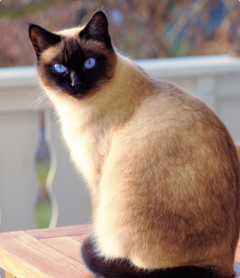

CONSULTAS
USUARIOS
PUBLICACIONES
SEGUIMIENTOS

PEDIDOS DE ADOPCION
POSTULANTES
|
ADMINISTRACION - SEGUIMIENTO
 Bensi, Lucas
Bensi, Lucas

FECHA DE NACIMIENTO: 23/01/2000
DNI: 42.768.987
CORREO ELECTRONICO: lucasBensi@gmail.com
DOMICILIO: Gdor. Benicio Fernandez 322, Rawson, Chubut
NUMERO DE CELULAR: (2804) - 748365
CONTRATO

1- El adoptante se compromete a adoptar el animal del/la rescatista con los datos que se reseñan a
continuacion, hasta que dicho animal muera o sea devuelto con plena salud.
ESPECIE: FELINO
NOMBRE: PUCHI
RAZA: SIAMES
SEXO: M
EDAD: 1 AÑO
COLOR: CAFE, NEGRO
TAMAÑO: MEDIANO
ESTERILIZADO: SI
NUMERO MICROCHIP: 23
OTRAS SEÑAS: NO REQUIERE DE CUIDADOS ESPECIALES
2- El adoptante declara adoptar al animal unica y exclusivamente como animal de compañia y debe proporcionar informacion y
fotografias a el/la encargado del seguimiento en cuestion, como minimo una vez al mes o cada vez que este, lo solicite
3- El animal entregado en adopcion no podra ser utilizado para:
Caza de cualquier tipo y circunstancia
Experimentacion de cualquier tipo
La participacion en peleas o enfrentamientos contra otros animales
La cria
|